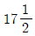
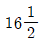
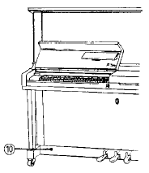
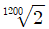
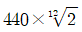
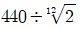
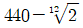
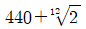

피아노조율기능사 (2003-01-26 기출문제)
1과목: 임의 구분
1. 피아노의 현 중

선의 굵기는 1mm이다.
선의 굵기는 몇 mm인가?- 0.975mm
- 0.925mm
- 0.950mm
- 0.900mm
(정답률: 82%)
2. 피아노의 내부를 성능적인 면에서 분류하면 구조적부분, 음과 직접 연관된 부분, 기계적 부분 등 3가지로 분류할 수 있는데 다음 중에서 음과 직접 연관된 부분이라고 볼 수 없는 것은?
- 향판
- 현
- 해머
- 철골
(정답률: 100%)

3. 조율핀의 무게는 어느 정도인가?
- 16g
- 18g
- 20g
- 22g
(정답률: 알수없음)
4. 현의 진동을 음향판에 전달하는 역할을 하는 것은?
- 브리지(bridge)
- 히치핀(hitch pin)
- 튜닝핀(tuning pin)
- 페달(pedal)
(정답률: 알수없음)
5. 업라이트피아노인 경우 건반 프론트에서 바란스핀의 거리와 바란스핀에서 캡스턴 보턴까지의 거리의 비가 3:2일 때 건반을 완전히 누르면(10mm) 캡스턴 보턴의 상승거리는 대략 얼마인가?
- 3.6mm
- 4.6mm
- 6.6mm
- 8.6mm
(정답률: 알수없음)
6. 피아노 보관상의 가장 적합한 조건은?
- 온도 30±5℃, 습도 40±10%에서 통풍이 적당히 있어야 한다.
- 온도 15℃, 습도 40%가 적당하다.
- 온도 20℃, 습도 80％ 이상에서 통풍이 적어야 한다.
- 온도 20±5℃, 습도 60±5％에서 통풍이 적당히 이루어져야 한다.
(정답률: 알수없음)
7. 향판의 특성을 가장 올바르게 설명한 것은?
- 탄력성과 유연성이 좋아야 한다.
- 비중이 크고 함수율이 낮아야 하며 미세한 진동은 울림이 없어야 한다.
- 향판의 특성과 울림과는 전혀 관계가 없다.
- 탄력성과 유연성이 좋으면 진동에 나쁜 영향을 준다.
(정답률: 알수없음)
8. 향판의 재질로서 적합치 않은 것은?
- 가문비나무
- 스위스파인
- 나도박
- 루마니아스프루스
(정답률: 알수없음)
9. 그림은 업라이트피아노 외장(CASE)의 일부이다. ⑩번의 명칭은?

- 밑판(bottom board)
- 옆판보조목(side lower strip)
- 반달목(upper sill)
- 토대목(bottom rail)
(정답률: 알수없음)
10. 피아노의 내건 내습성 시험시 외장을 온도 30± 3℃, 습도 40± 5%의 항온실내에서의 방치 시간은?
- 연속 12시간
- 연속 20시간
- 연속 24시간
- 연속 48시간
(정답률: 알수없음)
11. 순음이란 무엇인가?
- 한 개의 주파수가 진폭이 다른 소리
- 주파수가 서로 다른 순음이 합쳐진 소리
- 한 개의 주파수를 갖는 진폭이 일정한 소리
- 한 개의 주파수가 아닌 쾌감을 주는 소리
(정답률: 알수없음)
12. 다음 배음 중 기음과 협화가 가장 잘되는 배음은?
- 6배음
- 7배음
- 9배음
- 10배음
(정답률: 알수없음)
13. 매스킹 효과란?
- 낮은 음보다 높은 음이 더 빨리 전달되어서 두드러지게 들리는 현상
- 작은 소리와 큰 소리가 동시에 들릴 때 작은 소리가 큰 소리에 가려서 잘 들리지 않는 현상
- 튜바와 피콜로 소리가 함께 울릴 때 피콜로 소리가 들리지 않는 현상
- 불협화하는 화음을 이용해서 소리의 크기를 두드러지게 하는 현상
(정답률: 알수없음)
14. 인간의 가청 한계에서 일반적으로 사람의 귀로 가장 정확하게 들을 수 있는 맥놀이(Beats)의 수는?
- 12개
- 9개
- 6개
- 3개
(정답률: 알수없음)
15. 평균율에서 A49가 10센트 높다고 하면 몇 ㎐가 되는가? (단, A49 = 440㎐)
- 440.616
- 441.616
- 442.616
- 443.616
(정답률: 알수없음)
16. 다음 네가지 주파수로 발생되는 소리 중 장애물이 있을 때 가장 멀리까지 전달되는 것은?
- 60Hz
- 600Hz
- 1500Hz
- 3000Hz
(정답률: 알수없음)
17. 반사도 되지만 흡수되어 버리는 성질이 강한 주파수는?
- 낮은 주파수
- 높은 주파수
- 중간 주파수
- 초저 주파수
(정답률: 알수없음)
18. 음의 종류에는 여러가지가 있는데 그 중 옳지 않게 설명한 것은?
- 소음(noise)은 시끄러운 음으로 진동수 측정이 불가능하다.
- 악음(musical sound)은 진동수 측정이 가능하다.
- 악음(musical sound)은 규칙적인 진동에 의해서 일어나고 강약, 고저, 음색의 성질을 가진다.
- 순음(pure tone)은 강약, 고저의 성질을 가지며 음색의 차이를 감별할 수 있다.
(정답률: 알수없음)
19. 단선된 현을 교환할 때 핀끝부분에서 어느 정도로 절단해야 가장 좋은가?
- 25∼35 mm
- 45∼55 mm
- 65∼75 mm
- 85∼95 mm
(정답률: 알수없음)
20. 현과 주파수에 대한 상관관계를 설명한 것중 틀린 것은?
- 현의 장력이 커지면 주파수는 증가한다.
- 현의 질량이 커지면 주파수는 증가한다.
- 현의 길이가 증가하면 주파수는 감소한다.
- 현의 길이에 따라 주파수는 변한다.
(정답률: 73%)
2과목: 임의 구분
21. 기음에 대하여 완전협화하는 배음이 아닌 것은?
- 3 배음
- 6 배음
- 9 배음
- 12 배음
(정답률: 알수없음)
22. 신토닉콤마(syntonic comma)란?
- 피타고라스 콤마와 디디마스콤마와의 차
- 피타고라스 5도와 순정 장3도와의 차
- 피타고라스 5도와 순정 5도와의 차
- 피타고라스 장3도와 순정 장3도와의 차
(정답률: 알수없음)
23. 단3도, 장3도, 4도, 5도, 단6도, 장6도 등 각각의 음정비는 다음 어떤 것이 맞는가? (단, 위의 순서대로 비율을 나열하였다.)
- 4:6, 4:5, 3:4, 2:3, 5:8, 3:5
- 5:6, 3:5, 3:4, 2:3, 5:8, 3:5
- 5:6, 4:5, 2:3, 3:4, 5:8, 3:5
- 5:6, 4:5, 3:4, 2:3, 5:8, 3:5
(정답률: 알수없음)
24. 센트(CENT)에 관한 설명 중 틀린 것은?
- 반음간의 센트치는 100이다.
- 한 옥타브는 1200센트이다.
- 센트는 영국의 음향학자인 A.J Ellis가 고안해 냈다.
- 센트의 반음간의 진동수 비율은

= 1.⑤94631 이다.
(정답률: 알수없음)
25. A49의 진동수는 440Hz이다. 이 때 반음위의 음 A#50의 진동수를 구하려면 다음 어떤 것이 옳은가?




(정답률: 알수없음)
26. A37가 220Hz일 때 4도위의 D42(293.665Hz)와의 맥놀이수는 매초당 몇 개인가?
- 0.875
- 0.995
- 1.12
- 1.14
(정답률: 알수없음)
27. 건반 C28 음과 F33 음 4도의 맥놀이수는? (C28 : 130.813 Hz, F33 : 174.614 Hz)
- 0.4
- 0.59
- 1.2
- 1.9
(정답률: 알수없음)
28. 현의 1/8부분을 때릴 때 가장 강하게 나오는 배음은?
- 2배음
- 4배음
- 8배음
- 16배음
(정답률: 알수없음)
29. 소리의 파장이 5m인 경우 주파수는 몇 Hz인가? (단, 음속 340m/s)
- 68 Hz
- 170 Hz
- 440 Hz
- 0.015 Hz
(정답률: 알수없음)
30. 만약 해머가 현의 중앙 한점을 타현 했다고 가정하면 어떤 부분음이 포함되지 않는가?
- 2,4,6,8 부분음
- 3,6,9,12 부분음
- 6,9,12,15 부분음
- 9,12,15,18 부분음
(정답률: 알수없음)
31. 피아노가 놓인 방에 가구, 집기나 의복이 많이 걸려있으면 피아노의 어느 부위의 음이 제일 많이 흡음되는가?
- 고음역
- 저음역
- 중음역
- 중저음역
(정답률: 알수없음)
32. 16세기경부터 약 2세기간 올갠과 쳄발로의 표준적인 조율법에 사용된 음계는?
- 순정율음계
- 중간전음계
- 평균율음계
- 피타고라스음계
(정답률: 알수없음)
33. 사람은 아주 높은 음이나 아주 낮은 음에 대해서는 감각이 둔해지는데 일정한 강도에서 가장 잘 들리는 주파수는?
- 1000 ㎐
- 3000 ㎐
- 5000 ㎐
- 7000 ㎐
(정답률: 알수없음)
34. 음색에 가장 큰 영향을 주는 현의 조건은?
- 현의 질량
- 현의 균질
- 현의 길이
- 현의 타원성
(정답률: 알수없음)
35. 음정에 관한 설명이다. 옳지 않은 것은?
- 기본음정에는 3개의 완전음정(1도, 5도, 8도)만 포함된다.
- 기본음정에는 4개의 장음정(2도, 3도, 6도, 7도)이 포함된다.
- 완전5도 음정에는 3개의 온음과 1개의 반음이 포함된다.
- 장3도 음정에는 2개의 온음이 포함된다.
(정답률: 알수없음)
36. 페달에서 액션이나 건반에 이르는 연결의 중간장치를 무엇이라 하는가?
- 트로웰
- 익스트랙터
- 호울더
- 트랩워크
(정답률: 알수없음)
37. 건반고르기 작업에 대한 설명 중 맞는 것은?
- 건반고르기는 밸런스레일 펀칭크로스 위에 종이 펀칭을 고여 작업한다.
- 종이펀칭을 고일 때에는 두꺼운 것이 위로 올라가야 한다.
- 종이펀칭이 고여져 있어도 건반이 높을 때는 건반목을 깍아서 낮게한다.
- 백레일크로스 위에 잡물을 제거한 후 건반고르기를 한다.
(정답률: 알수없음)
38. 백건 전면과 열쇠봉과의 간격은? (단위 : mm)
- 1.5
- 2.5
- 3.5
- 4.5
(정답률: 알수없음)
39. ① 46∼48mm ② 9.0∼10.5mm ③ 2∼3mm의 치수는 무슨 조정수치인가?
- ① 타현거리 ② 해머스톱거리 ③ 건반깊이
- ① 타현거리 ② 건반깊이 ③ 해머접근거리
- ① 타현거리 ② 댐퍼거리 ③ 건반깊이
- ① 타현거리 ② 페달거리 ③ 건반깊이
(정답률: 알수없음)
40. 아래 문장은 백첵에 관한 설명이다. 이중 맞지 않는 것은?
- 백첵 조정은 텃치에도 관계가 있으며, 스톱 거리에도 영향을 준다.
- 해머가 현에서 15mm정도 떨어지게 하는데도 영향을 준다.
- 백첵 조정은 해머스톱거리와는 관계가 없고 무게에는영향을 준다.
- 백첵은 건반을 누르면 캐처를 안전하게 잡아 주는 역할을 한다.
(정답률: 알수없음)
3과목: 임의 구분
41. 브라이들 테이프에 관한 설명 중 틀린 것은?
- 브라이들 테이프는 백첵 와이어 1.5mm정도 옆에 있도록 한다.
- 브라이들 테이프는 해머가 빨리 돌아오게 하기위해 필요하다.
- 브라이들 테이프는 액션을 분해했을 때 쉽게 조립하기 위해 필요하다.
- 브라이들 테이프는 받드와 캐쳐생크 접착시 같이 끼워 연결한다.
(정답률: 알수없음)
42. 치핑(chipping)이란?
- 후레임을 내리고 수리작업을 하는 것이다.
- 현을 전체 교환한 후 액션 없이 현을 튕겨서 대강조율하는 것이다.
- 후레임을 내리고 브리지가 가라 앉은 것을 감안하여 후레임 위치를 상향 조절하는 것이다.
- 현을 전체 교환하는 것을 말한다.
(정답률: 100%)
43. 댐퍼레버 스프링과 펀칭 접촉면에서 잡음이 난다. 간단한수리 방법은?
- 나사못을 조인다.
- 스프링을 교환한다.
- 댐퍼 레버를 교환한다.
- 스프링 접촉 부위에 윤활제를 발라준다.
(정답률: 알수없음)
44. 페달 운동거리가 많을 때 처리방법 중 옳은 것은?
- 클로스를 페달 밑판에 알맞게 붙여 조정한다.
- 클로스를 페달 천정에 알맞게 붙여 조정한다.
- 클로스를 토대목측면 페달 닿는 곳에 알맞게 붙여 조정한다.
- 클로스를 페달 중앙 상단에 알맞게 붙여 조정한다.
(정답률: 100%)
45. 위펜과 위펜 사이가 맞닿을 경우 사이를 떼어 놓는 방법은?
- 위펜 사이에 쐐기를 박는다.
- 위펜 뒷단에 알맞는 나무를 끼워 놓는다.
- 알맞는 종이 패킹을 플랜지와 레일 사이에 끼운다.
- 플랜지와 플랜지 사이를 드라이버로 비틀어 놓는다.
(정답률: 알수없음)
46. 업라이트 피아노에서 연타가 되지 않는 원인이 아닌 것은?
- 건반 깊이가 얕아서
- 잭 동작이 둔해서
- 받드 센터핀이 빡빡해서
- 위펜 센터핀이 빡빡해서
(정답률: 알수없음)
47. 댐퍼스푼을 매끈하게 하는데 필요한 작업이 아닌 것은?
- 부드러운 가죽을 붙인다.
- 뜨거운 물로 닦아 낸다.
- 실리콘을 칠한다.
- 스틸울(철면)로 닦아 낸다.
(정답률: 알수없음)
48. 타현점이 많이 마모된 해머 헤드의 파일링(filing)하는 방법 중 옳은 것은?
- 고음부분은 둥글게 저음부분은 뾰족하게 깎아야 한다.
- 페이퍼 진행방향은 중심점으로 부터 위 아래로 진행한다.
- 해머헤드 양면을 계란형으로 연마하고 마지막에 헤드의 앞부분을 연마한다.
- 타현점의 자국을 완전히 없앤후 옆부분을 연마한다.
(정답률: 알수없음)
49. 업라이트 피아노의 해머생크가 부러졌을 때 가장 올바른 교환 순서는?
- 우선 부러진 생크를 빼내고 다음 받드에 생크를 꽂고 나중에 해머헤드를 꽂는다.
- 부러진 생크를 빼고 생크 길이를 맞춘다음 생크를 받드에 끼우고 해머헤드를 끼운다.
- 부러진 생크를 빼고 해머헤드에 생크를 꽂고 생크길이를 맞춘다음 받드에 꽂는다.
- 부러진 생크를 빼고 동시에 받드와 헤드에 생크를 꽂는다.
(정답률: 알수없음)
50. 건반이 심하게 휘어져 있을 경우 처리 방법 중 옳은 것은?
- 휘어진 바깥쪽에 쐐기를 박아 바로 잡는다.
- 후론트 핀을 휘어서 작업한다.
- 바란스 핀을 휘어서 작업한다.
- 열을 가하여 바로잡고 그래도 닿는 부분은 대패나 줄로 갈아낸다.
(정답률: 알수없음)
51. 페달기구 수리에 관한 사항 중 옳지 않은 것은?
- 페달 밑에 쿠숀펠트를 붙일 때에는 운동거리를 감안해서 적당한 두께로 붙인다.
- 페달봉이 후레임에 닿아 잡음이 날 경우에는 페달봉을 약간 휘고 후레임에 펠트를 붙여 작업한다.
- 페달이 토대목 옆면에 닿아 잡음이 날 경우에는 토대목 옆면을 갈아 주거나 크로스나 스킨 등을 붙이고 흑연을 칠해 준다.
- 페달 스프링에서 잡음이 날 경우에는 스프링을 교체해서 처리하는 방법밖에 없다.
(정답률: 알수없음)
52. 수리용 튜닝핀(오버사이즈)의 굵기의 차이가 가장 알맞는 것은?
- 0.5 mm - 1.0 mm 가량
- 2.15 mm - 2.35 mm 가량
- 0.15 mm - 0.25 mm 가량
- 1.25 mm - 1.50 mm 가량
(정답률: 알수없음)
53. 다음은 갈라진 음향판을 수리하는 방법이다. 이 중 옳지 않는 것은?
- 스프루스를 삼각모양으로 깍아서 끼워준다.
- 강선으로 갈라진 부분에 꼭 맞게 끼워준다.
- 향판과 같은 재질의 나무로 메워준다.
- 쐐기에 접착제를 박은 후 샌딩하여 래커칠을 해준다.
(정답률: 알수없음)
54. 액션에서 잡음이 나지 않는 경우는?
- 플랜지가 헐거웠을 때
- 잭 쿠션이 마모되었을 때
- 위펜 클로스가 마모되었을 때
- 댐퍼 펠트가 너무 부드러울 때
(정답률: 알수없음)
55. 향판에서 잡음이 날 수 없는 경우는?
- 향판과 돌림목이 떨어졌을 때
- 향판과 지주 사이가 좁아졌을 때
- 향판과 향봉 사이가 떨어졌을 때
- 향판과 후레임 사이에 이물질이 끼었을 때
(정답률: 알수없음)
56. 피아노 케이스(외장)에서 잡음이 나는 경우가 아닌 것은?
- 경첩의 나사못이 헛돌 때
- 건압대와 건반의 간격이 조금 떨어져 있을 때
- 상판과 옆판사이의 마찰에 의해서
- 하판의 고정이 불안정할 때
(정답률: 알수없음)
57. 타건시 공명체가 될 수 없는 것은?
- 전등, 전기스토브
- 유리창, 옷장
- 피아노 위의 책
- 커튼 고리
(정답률: 알수없음)
58. 건반을 세게 눌렀을 경우 잭과 잭스톱 레일의 간격은 어느 정도가 되어야 하는가?
- 붙어야 한다.
- 1-2 mm 정도
- 3-4 mm 정도
- 5-6 mm 정도
(정답률: 알수없음)
59. 업라이트(Upright)피아노의 경우 해머진행시 좌측으로 진행할 때의 조정 방법은?
- 플랜지 상단을 좌측으로 조정한다.
- 플랜지 상단을 우측으로 조정한다.
- 종이테이프를 플랜지 좌측에 붙인다.
- 종이테이프를 플랜지 우측에 붙인다.
(정답률: 알수없음)
60. 업라이트 피아노의 잭 스톱 레일은 어떤 역할을 하는가?
- 잭의 지나친 이탈 방지
- 스프링의 강도 조정
- 해머 스톱거리 조정
- 건반 깊이의 조정
(정답률: 알수없음)